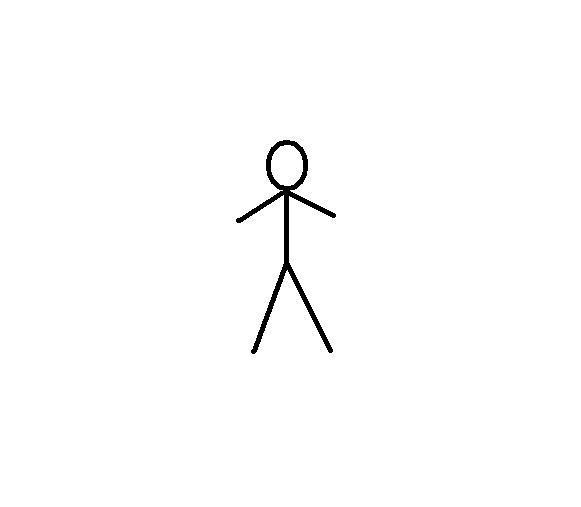

Antonio Costantino
Appassionato di tecnologia, innovazione, droni e musica.
Sempre alla ricerca di nuove sfide e opportunità di crescita.
Istituto Tecnico Economico Perito in Sistemi Informativi Aziendali
Certificazioni informatiche e linguistiche
Pilota certificato UAS categoria open A1-A3